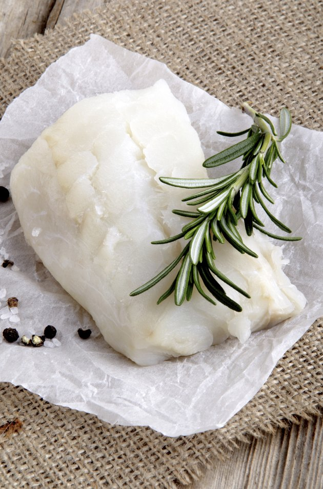

Lutefisk

Description
Lutefisk, which means "lye fish," is dried cod that has been treated with lye for preservation.
While there are, of course, more advanced ways of preserving food, lutefisk is a Scandinavian
tradition still enjoyed today. Before it is prepared, it is soaked in cold water for days to
remove the lye. Lutefisk is typically sold already purged of lye. The treatment gives lutefisk
a gelatinous texture. Lutefisk must be cooking gently, otherwise it will fall apart, resulting
in an unappetizing mush. It is best prepared in the oven or simmered on the stove top.
Ingredients
- 1 lb. lutefisk, purged of lye, divided into individual serving portions
- Salt
- Butter, melted (optional)
- Bacon (optional)
- Whole milk
- White wine
Steps
- Arrange the lutefisk in a baking dish in a single layer and sprinkle with salt. Let the
lutefisk rest for half an hour.
- Drain and discard the liquid that has been expelled from the lutefisk. Press down on the
lutefisk, gently, to purge the fish of any additional liquid.
- Preheat your oven to 400 degrees Fahrenheit. Sprinkle a little more salt on top of the
lutefisk and bake, covered, approximately 25 minutes or until the fish flakes easily.
- Melt butter or fry a few slices of chopped bacon while the lutefisk bakes. When the lutefisk
is finished, serve drizzled with melted butter or topped with bacon and bacon grease.